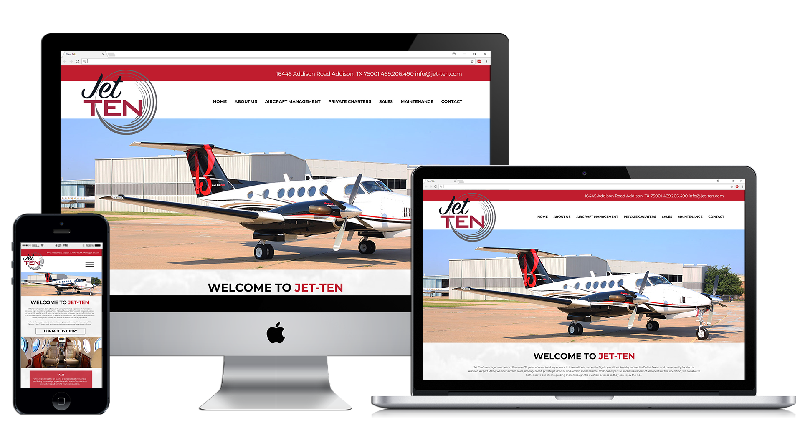

Work

Janson Equipment

Used Krone North America

Bobcat Plus
×

This site is owned by and created through Sandhills Publishing
Bobcat Plus
Bobcat Plus was an easier site in a design sense since they are part of a widely known brand that they wanted represented in their website. After a consultation with the customer, I created an analysis in Photoshop and built the site with HTML5 and CSS3. It was very important to this customer for their listings to be easily accessed and categorized efficiently for users with a dealer showroom and frameless inventory. Not only was the look and feel of the site very similar to other Bobcat sites, the functionality also translated to Bobcat Plus.
VIEW LIVE SITE

Truck King International
